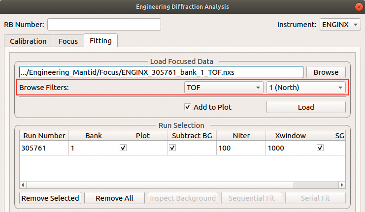

Diffraction Changes#
Powder Diffraction#
New features#
New algorithm CalculatePlaczek to compute both first and second Placzek correction factors.
New algorithm CalculatePlaczekSelfScattering2 utilizes CalculatePlaczek to compute first order correction.
New algorithm CombineDiffCal to calibrate groups of pixels after cross correlation so that diffraction peaks can be adjusted to the correct positions.
New algorithm MultipleScatteringCorrection to compute the multiple scattering correction factor for a sample using numerical integration.
New algorithm NOMADMedianDetectorTest to mask pixels showing deficient or excessive total counts.
New algorithm SetSampleFromLogs inspects the sample environment logs for sample material and geometry information.
New script for doing calibration by groups, PowderDiffractionCalibration.
Improvements#
AlignAndFocusPowder permits masking of discrete wavelength ranges to zero, for resonance filtering.
Improved performance of ApplyDiffCal on large instruments e.g. WISH. This in turn improves the performance of AlignAndFocusPowder.
ConvertDiffCal now optionally updates a previous calibration when converting offsets.
LoadILLDiffraction now adds input run number also to a metadata field run_list, intended to contain a full list of numbers, handled by MergeRuns.
LoadILLPolarizedDiffraction now sorts the polarization orientations and enforces spin-flip, then non-spin-flip order.
LoadWANDSCD has a new option to perform normalization in the same loading process.
PDCalibration has a new option to use the IkedaCarpenterPV peak function.
PolDiffILLReduction received a number of improvements
Changes names of input workspaces to contain polarization information.
Transmission can be provided as a number or a workspace group.
New data averaging option depending on measurement 2theta.
Option to display all measured points on a scatter plot.
New option for self-attenuation treatment using measured transmission.
Several improvements have been made to the group calibration routine including
More input control parameters, including peak function type for estimating offset after cross correlation and an option to turn on or off the smoothing of data for cross correlation purpose.
The workflow of group calibration script is also polished to make it smoother. Accordingly, unit tests have been updated.
Groups are now allowed with dedicated control parameters.
Documentation has been added as a guidance for general users.
Making it more generic.
SNAPReduce permits saving selected property names and values to file, to aid autoreduction.
Add a custom ttmode to the PEARL powder diffraction scripts for running with a custom grouping file.
Added a 3mf format file describing the PEARL sample and environment shapes for the P-E press. Also fixed a couple of minor issues in the 3mf file format loader used in LoadSampleEnvironment.
Bugfixes#
Fixed a bug when filtering events in AlignAndFocusPowder based on time-of-flight. The code now allows setting the minimum time-of-flight to zero (inclusive).
Corrected the equation for pseudo-voigt FWHM and mixing parameter in peak profile function Bk2BkExpConvPV.
Fixed the issue with the calibration diagnostics script when dealing with instruments of which the detector ID does not start from 0.
Fixed the issue with SNSPowderReduction - when an invalid height unit is encountered while reading sample log the geometry is ignored and it relies purely on user input.
Fixed a bug when converting TOF to d-spacing using diffractometer constants with non-zero DIFA when a parabolic model is selected.
Deprecation#
Existing CalibrateRectangularDetectors is deprecated.
Existing GetDetOffsetsMultiPeaks is deprecated.
Engineering Diffraction#
New features#
New setting for default peak function to fit in the Engineering Diffraction interface (initial default is BackToBackExponential).
Added serial fit capability to Fitting tab in Engineering Diffraction interface - this fits all loaded workspaces with same initial parameters.
Added GSAS coefficients for parameters of peak profile function Bk2BkExpConvPV for ENGIN-X.
Automatically subtracts background from runs on loading in Engineering Diffraction interface.
The most recently created or loaded Calibration is now selected by default in the load path when the interface is opened.
The last used RB number is now saved for the next session.
The generation of the files required for Vanadium normalization is now done on the Focus tab of the Engineering Diffraction interface. This means the Vanadium data can be updated without having to rerun the Ceria calibration. As part of this change the setting
Force Vanadium Recalculationhas been removed and the Vanadium run number input has been moved from the Calibration tab to the Focus tab. The Vanadium run number is also no longer written to the prm generated on the Calibration tab (Note: this is a breaking change and means .prm files generated from the EngDiff UI with older versions of Mantid won’t load successfully).
Improvements#
The usability of the file finder on the Fitting tab has been improved by the addition of file filters based on unit and/or bank.
{kind=link}

The workflows for Calibration and Focusing in the Engineering Diffraction interface and EnginX scripts have been replaced to make use of faster, better tested C++ algorithms (PDCalibration). As a result some algorithms have been deprecated, and will likely be removed entirely in the next release. See below for more details.
The cropping/region of interest selection for Calibration/Focusing is now chosen only on the Calibration tab, to avoid confusion and duplication of input.
The region of interest for Calibration/Focusing can now be selected with a user-supplied custom calibration file.
The Focused Run Files input box defaults to the last runs focused on the Focus tab, even if multiple runs were focussed.
The full calibration setting now has a default value consisting of the path to the
ENGINX_full_instrument_calibration_193749.nxs file.StartX and EndX for fitting region in Fitting tab can be manually entered in the fit browser.
Bugfixes#
Sequential fitting in the Engineering Diffraction interface now uses the output of the last successful fit (as opposed to the previous fit) as the initial parameters for the next fit.
If the user saves a project having previously opened and closed the Engineering Diffraction interface, loading the project will not re-open the interface.
The help button on the Engineering Diffraction interface points to the correct page, having been broken in the last release.
Using the Clear button on the Workspace widget while using the Fitting tab no longer causes errors when you try to load runs back in.
On the Fitting tab of the Engineering Diffraction interface the background can be inspected whether the background subtraction box is checked or not.
Prevent crash when invalid arguments passed to background subtraction algorithm (EnggEstimateFocussedBackground) in the Fitting tab of the Engineering Diffraction interface.
Deprecation#
The replacement of workflows for Calibration and Focusing in the Engineering Diffraction interface and EnginX scripts means the following algorithms have been deprecated, and will likely be removed entirely in the next release:
Single Crystal Diffraction#
New features#
New algorithm ApplyInstrumentToPeaks to update the instrument of peaks within a PeaksWorkspace.
New algorithm ConvertPeaksWorkspace for quick conversion between PeaksWorkspace and LeanElasticPeaksWorkspace.
New algorithm FindGlobalBMatrix that refines common lattice parameters across peak workspaces from multiple runs with a different U matrix (which encodes the orientation) per run.
New algorithm HB3AIntegrateDetectorPeaks for integrating four-circle data from HB3A in detector space using simple cuboid integration with and without fitted background.
New plotting script that provides diagnostic plots of SCDCalibratePanels on a per panel/bank basis.
Exposed
mantid.api.IPeak.getCol()andmantid.api.IPeak.getRow()to python.New definition file for D19 ILL instrument added.
Improvements#
Existing DGSPlanner expanded to support WAND².
Existing algorithm IntegrateEllipsoids now can use a different integrator for satellite peaks.
New option in IntegrateEllipsoids to share Bragg peak background with satellite peaks.
Existing algorithm MaskPeaksWorkspace now also supports tube-type detectors used at the CORELLI instrument.
Improvements to SCDCalibratePanels including
major interface update
enabling the calibration of T0 and sample position
fine control of bank rotation calibration
better calibration of panel orientation for flat panel detectors
retains the value of small optimization results instead of zeroing them.
Find detector in peaks will check which detector is closer when dealing with peak-in-gap situation for tube-type detectors.
Bugfixes#
IndexPeaks can now index peaks in a PeaksWorkspace with only a single run without optimising the UB (i.e. it is now possible to set
CommonUBForAll=Truein this instance).Expanded the Q space search radius in DetectorSearcher to avoid missing peaks when using PredictPeaks.